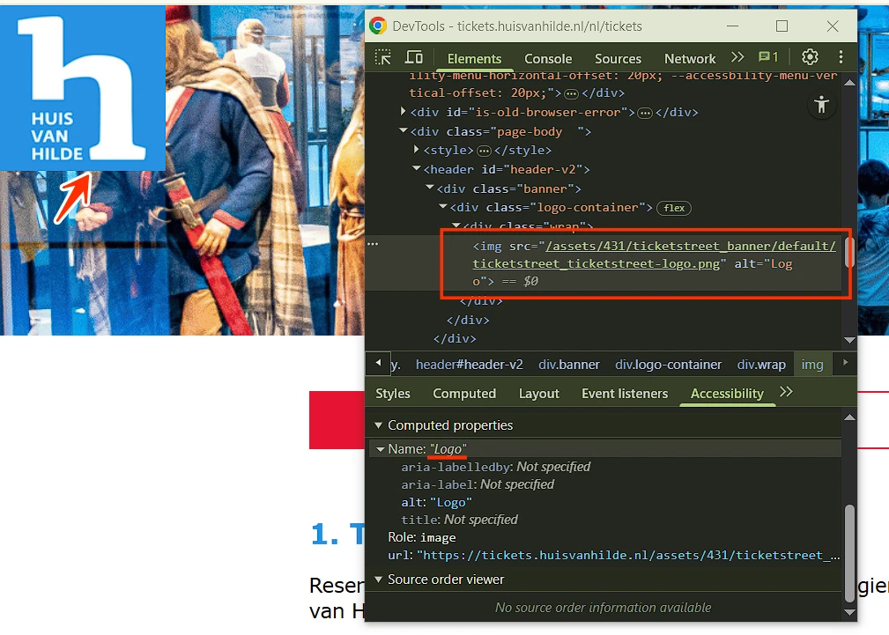
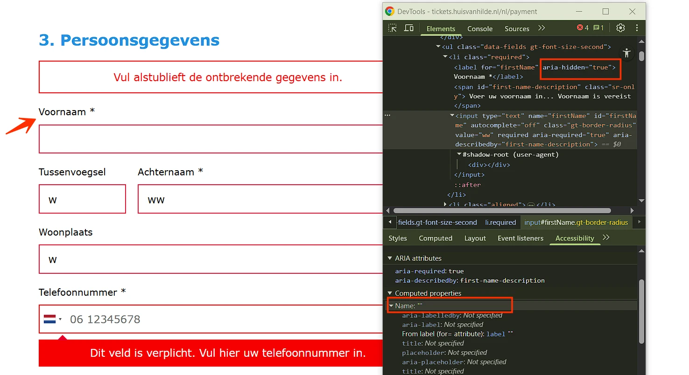
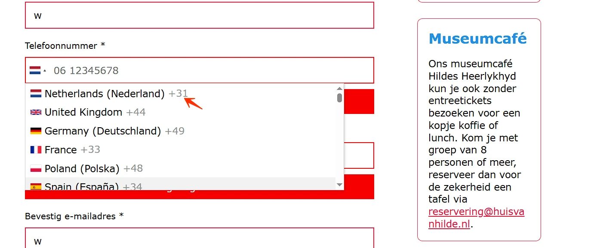
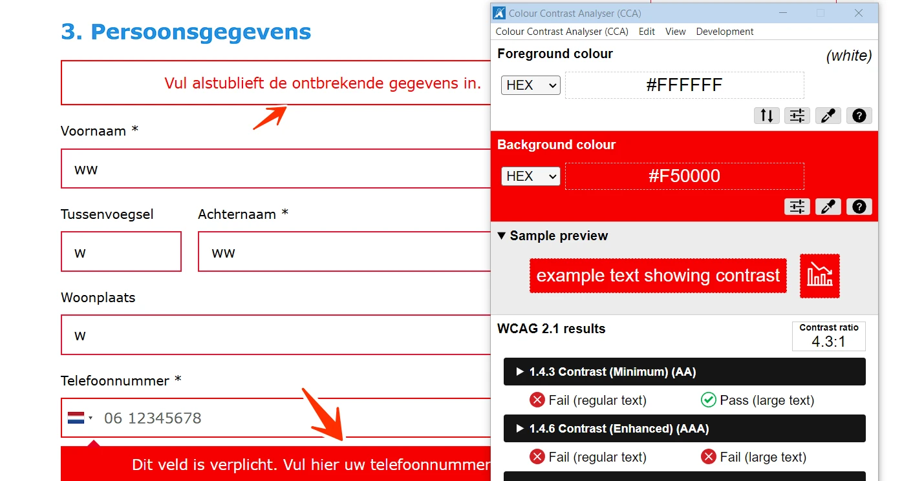
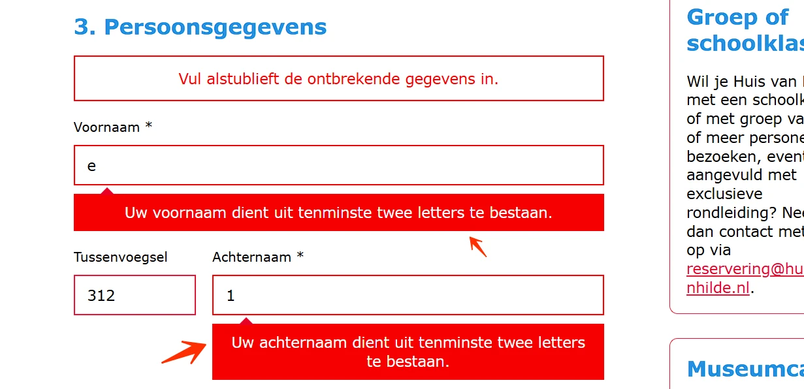
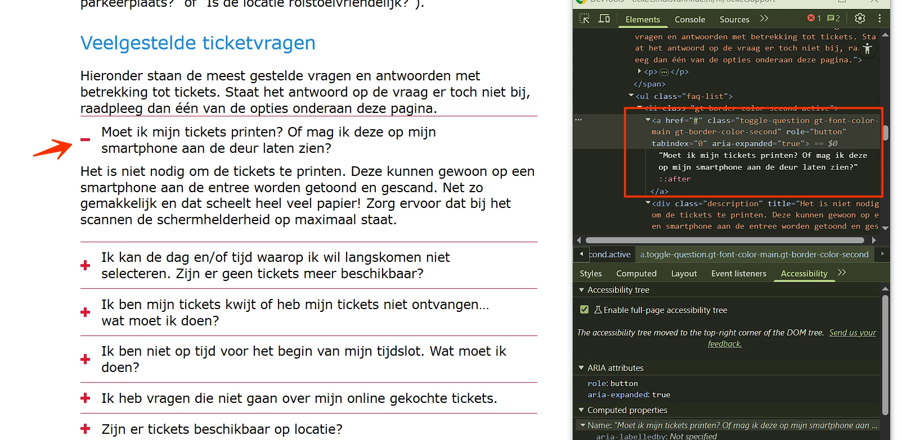
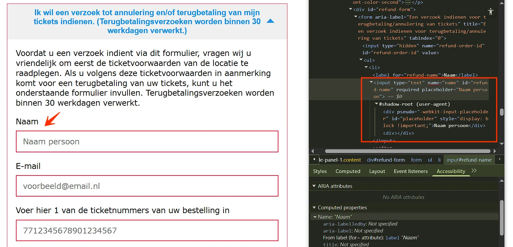
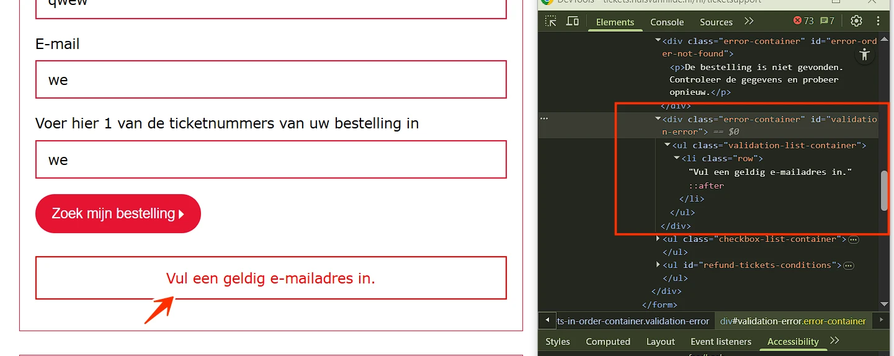

Audit digitale toegankelijkheid van website tickets.huisvanhilde.nl
Samenvatting
Wij hebben de website tickets.huisvanhilde.nl onderzocht tussen 23 en 29 augustus 2025. Op dit moment zijn 41 van de 55 succescriteria als voldoende beoordeeld. In dit rapport lees je wat er bij de overige 14 nog fout gaat, en hoe je dat kunt verbeteren.
#1 - Meerdere pagina’s hebben dezelfde title-tekst
Impact: MediumType: TechniekWCAG: 2.4.2
De pagina’s 404 error, Homepagina, Ticketsupport and Wijzig uw tickets online hebben allemaal dezelfde tekst in het title-element van de pagina: “Online tickets”. Dit is niet de bedoeling. In het title-element van elke pagina moet een unieke tekst staan die de inhoud van de pagina beschrijft, bij voorkeur gevolgd door de naam van de organisatie. Staat hier bij twee of meer pagina’s dezelfde tekst? Dan kan dit verwarrend zijn voor de bezoeker. De navigatie tussen pagina’s wordt dan ook lastiger.
Oplossing:
Verander de tekst in het title-element van, zodat deze op elke pagina uniek is en de inhoud van de pagina nauwkeurig beschrijft.
#2 - Tekstalternatief van het logo is niet voldoende
Impact: MediumType: ContentWCAG: 1.1.1

Het logo bovenaan de website toont de volledige tekst “Huis van Hilde”, maar de alt-tekst is alleen “Logo”.
In het tekstalternatief staat dus niet alle tekst die in het logo te zien is. Dit moet wel. Zo weten bezoekers die het plaatje niet kunnen zien, ook precies wat er staat.
#### Oplossing:
Verander de `alt`-tekst zodat de volledige tekst van het logo erin staat: alt=“Huis van hilde”.
### Knop heeft niet de juiste toegankelijke rol en toestand
Impact: GrootType: TechniekWCAG: 4.1.2
Op alle pagina’s staat een knop voor toegankelijkheidsinstellingen. Deze knop heeft niet de juiste toegankelijke rol en status (open/gesloten).
Elk HTML-element heeft standaard een rol. Dit betekent dat het element bepaalde eigenschappen en functies heeft om informatie aan de bezoeker te geven of om informatie van de bezoeker te ontvangen. De rol bepaalt wat het element doet. Schermlezers en andere hulpmiddelen moeten de correcte rol van elk element op een webpagina kennen. Zo kunnen zij op een juiste manier met het element omgaan en aan de bezoeker uitleggen wat het element doet.
Oplossing:
Zorg dat de knop de juiste toegankelijke rol heeft (button). Gebruik het button-element.
De status van de knop kan worden aangegeven door het attribuut aria-expanded aan de knop toe te voegen, of door visueel verborgen tekst op te nemen die de status van de knop beschrijft.
#3 - SC 2.1.1 Knop kan niet bediend worden met spatiebalk en Enter-toets
Impact: GrootType: TechniekWCAG: 2.1.1
Op alle pagina’s staat een knop voor toegankelijkheidsinstellingen. Deze knop is niet toegankelijk via het toetsenbord. Alle interactieve elementen moeten met het toetsenbord te bedienen zijn, zodat ook bezoekers die geen muis gebruiken de functionaliteit kunnen bereiken. Zorg er daarom voor dat de knop volledig met het toetsenbord toegankelijk wordt gemaakt.
Oplossing:
Zorg dat de knop zowel met de spatiebalk als de Enter-toets bediend kan worden. Als je deze knop als een button-element programmeert, wordt het automatisch toegankelijk via het toetsenbord.
Op deze pagina staat een select-element om de taal te kiezen. Het heeft geen permanent label. Dit probleem houdt verband met SC 4.1.2, omdat dit select-element geen toegankelijke naam heeft, en met SC 2.5.3, omdat bezoekers geen spraakbesturing kunnen gebruiken om dit element te bedienen.
Hulpsoftware weet niet wat dit element doet. Bezoekers die stemgestuurde software gebruiken, kunnen dit select-element niet activeren. Zij spreken een commando uit door de zichtbare tekst voor te lezen. Het label moet daarom permanent zichtbaar zijn en terugkomen in de toegankelijke naam van het element. Wanneer de zichtbare tekst niet voorkomt in de toegankelijke naam die in de code staat, werkt het commando niet. Zorg er daarom voor dat de toegankelijke naam de zichtbare tekst bevat en zet deze tekst bij voorkeur vooraan in de naam. De toegankelijke naam mag ook exact hetzelfde zijn als de zichtbare tekst.
#### Oplossing:
Voeg een permanent zichtbaar label toe.
### Kleurcontrast van tekst is te laag (tekst kleiner dan 24px en niet vetgedrukt)
Impact: MediumType: ContentWCAG: 1.4.3
Op deze pagina staat een select-element om de taal te kiezen. De opties in dit select-element hebben lichtblauw (#2891E1) tekst op een witte achtergrond. De contrastratio is te laag: 3,4:1.
Oplossing:
Deze tekst is kleiner dan 24px en niet vetgedrukt, daarom moet het contrast minimaal 4,5:1 zijn.
#5 - SC 1.3.1 Kop is niet gemarkeerd als koptekst
Impact: MediumType: ContentWCAG: 1.3.1
Op deze pagina is in stap 1 de volgende tekst niet opgemaakt als koptekst: “Regulier”.
Bezoekers die hulpsoftware gebruiken hebben niets aan een (tussen)kop die er wel uitziet als kop, maar niet als kop is gemarkeerd. Via de koppen op een pagina kunnen gebruikers van hulpsoftware de inhoud scannen of snel naar een bepaalde sectie springen. Maar dat kan alleen als de kop ook echt in de code staat. Als koppen alleen visueel als kop zijn vormgegeven (bijvoorbeeld vetgedrukt), ontstaat bovendien nog een ander probleem: de structuur van de informatie in de code wijkt dan af van de visuele structuur.
Oplossing:
Dit voorkom je door koppen altijd te markeren met het juiste HTML-element, op het juiste kopniveau: h1, h2, h3, h4, h5 of h6. Meestal kun je het kopniveau kiezen via de content-editor in je CMS. De HTML-code voor de kop wordt dan automatisch toegepast.
#6 - Relatie tussen de kolommen en de tabelkoppen is niet duidelijk voor hulpsoftware
Impact: MediumType: TechniekWCAG: 1.3.1
Op deze pagina staat in stap 1, onder de kop “1. Tickets Huis van Hilde” informatie over beschikbare tickets. In HTML ontbreek de structuur die ziende bezoekers op de pagina zien. Hulpsoftware kan de relatie tussen de tabelkoppen (“Selecteer uw tickets”, “Prijs”, “ Aantal”, “Subtotaal”) en de kolommen niet correct voorlezen.
Oplossing:
Dit kan worden opgelost door de informatie over het kopen van tickets in een datatabel te plaatsen.
#7 - Onzichtbaar element krijgt toetsenbordfocus
Impact: MediumType: TechniekWCAG: 2.4.3
Op deze pagina komt de toetsenbordfocus na de skiplink “Ga naar de inhoud” terecht op een onzichtbaar interactief element. Hetzelfde probleem doet zich voor na het select-element voor de taalselectie.
De toetsenbordfocus mag niet terechtkomen op onzichtbare interactieve elementen (links, knoppen, formuliervelden). Als dat wel gebeurt, kan een bezoeker ze onbedoeld activeren.
Oplossing:
Zorg dat alleen elementen die zichtbaar zijn toetsenbordfocus kunnen krijgen en dat de focusvolgorde logisch is.
#8 - Invoervelden voor persoonlijke gegevens hebben geen correct autocomplete-attribuut
Impact: MediumType: TechniekWCAG: 1.3.5
Op deze pagina staat in stap 3 een formulier waarin persoonlijke gegevens worden verzameld (bijvoorbeeld achternaam, e-mail, telefoonnummer). De invoervelden, zoals “Voornaam ”, hebben een onjuiste waarde zoals “off”.
Invoervelden voor persoonlijke informatie zoals achternaam, e-mailadres of telefoonnummer moeten het autocomplete-attribuut hebben. Hierdoor kunnen browsers en hulpsoftware helpen bij het invoeren. Bijvoorbeeld door de velden al automatisch in te vullen.
Oplossing:
Gebruik het autocomplete-attribuut voor alle velden waar persoonlijke informatie in moet worden gevuld. Op deze pagina vind je meer informatie over autocomplete en welke waardes je verplicht moet gebruiken: https://www.w3.org/Translations/WCAG22-nl/#input-purposes.
#9 - Informatieve elementen zijn verborgen voor hulpsoftware
Impact: MediumType: TechniekWCAG: 1.3.1, 4.1.2

In stap 3 staat een formulier. De labels voor alle invoervelden zijn verborgen voor de schermlezer met aria-hidden="true". Het attribuut `aria-hidden="true"` maakt elementen onzichtbaar voor hulpsoftware. Gebruik dit daarom niet bij informatieve elementen.
Dit probleem houdt ook verband met SC 4.1.2, omdat de invoervelden geen toegankelijke naam hebben.
In stap 3 staat een formulier. Naast het veld “Telefoonnummer” bevindt zich een select-element om de landcode te kiezen. In de opties is de tekst met de landnaam verborgen voor de schermlezer met `aria-hidden=“true”`, bijvoorbeeld “Netherlands (Nederland)”.
#### Oplossing:
Verwijder het attribuut `aria-hidden=”true”`.
### Kleurcontrast van tekst is te laag (tekst kleiner dan 24px en niet vetgedrukt)
Impact: MediumType: TechniekWCAG: 1.4.3

In stap 3 staat een formulier. Naast het veld “Telefoonnummer” staat een select-element om de landcode te kiezen. In deze opties is de tekst van de codes grijs (`#999999`) op een witte achtergrond, bijvoorbeeld “+31”. De contrastratio is te laag: 2,8:1.
#### Oplossing:
Deze tekst is kleiner dan 24px en niet vetgedrukt, daarom moet het contrast minimaal 4,5:1 zijn.
### De kleur van de rand van het invoerveld heeft niet genoeg contrast
Impact: MediumType: TechniekWCAG: 1.4.11
In stap 3 staat een formulier met een selectievakje met het label “Graag ontvang ik de nieuwsbrief”. De randkleur van het selectievakje is grijs (#BBBBBB) op een witte achtergrond. De kleurcontrastverhouding is te laag: 1,9:1.
Hetzelfde probleem doet zich voor in stap 4 bij het selectievakje “Ik ga akkoord met de algemene voorwaarden”.
Oplossing:
De randen van interactieve elementen zoals invoervelden moeten minimaal een contrast van 3,0:1 hebben met de achtergrond.
#10 - Kleurcontrast van tekst is te laag (tekst kleiner dan 24px en niet vetgedrukt)
Impact: MediumType: TechniekWCAG: 1.4.3

In stap 3 staat een formulier. Wanneer het formulier met onjuiste gegevens wordt verzonden, verschijnen er foutmeldingen in rood (`#F50000`) op een witte achtergrond of andersom. De contrastratio is te laag: 4,3:1.
#### Oplossing:
Deze tekst is kleiner dan 24px en niet vetgedrukt, daarom moet het contrast minimaal 4,5:1 zijn.
### Instructie bij invoerveld is niet altijd zichtbaar
Impact: MediumType: TechniekWCAG: 3.3.2

In stap 3 staat een formulier. De invoervelden “Voornaam” en “Achternaam” hebben een bijbehorende instructie. Deze instructie is echter niet permanent zichtbaar op de pagina, maar verschijnt alleen binnen een foutmelding, bijvoorbeeld: “Uw voornaam dient uit tenminste twee letters te bestaan”, “Uw achternaam dient uit tenminste twee letters te bestaan”.
#### Oplossing:
Zorg dat instructies vooraf al zichtbaar en toegankelijk zijn voor alle bezoekers, niet alleen in foutmeldingen. Verplaats de instructie zodat deze permanent zichtbaar is in de buurt van het invoerveld.
### Foutmelding is een instructie in plaats van een uitleg over de fout
Impact: MediumType: TechniekWCAG: 3.3.1
Op deze pagina staat in stap 3 een formulier. De foutmeldingen in het formulier tonen foutmeldingen zoals “Dit veld is verplicht.”, “Vul hier uw telefoonnummer in”, “Vul een geldig e-mailadres in” en andere. Dit is een instructie, geen foutmelding. Een goede foutmelding maakt duidelijk dat er een fout is gemaakt, en geeft aan waar de fout zit. Vaak staat er een ontkenning in. Een voorbeeld van een goede foutmelding is: "Het veld is niet (goed) ingevuld".
Oplossing:
Pas de foutmelding aan, zodat de bezoeker weet wat er fout is gegaan, bijvoorbeeld “Het veld NAAM is niet ingevuld”.
#11 - Foutmeldingen worden onbetrouwbaar getoond (HTML5-validatie)
Impact: MediumType: TechniekWCAG: 3.3.1, 2.2.1
In stap 3 staat een formulier. Wanneer het formulier met enkele lege velden wordt verzonden, verschijnen er HTML5-foutmeldingen. Deze foutmeldingen worden niet door alle browsers en schermlezers even goed ondersteund. Elke browser toont de meldingen anders, en niet altijd op een toegankelijke manier: de melding is soms kortaf en onvolledig.
Dit probleem houdt ook verband met SC 2.2.1; deze foutmeldingen verdwijnen te snel. Er is een tijdslimiet ingesteld.
Oplossing:
Voeg altijd zelf foutmeldingen toe aan het formulier. Controleer of er nog meer formulieren zijn die dit probleem hebben.
#12 - Tekstalternatief van het logo is niet voldoende
Impact: MediumType: ContentWCAG: 1.1.1, 2.5.3
In stap 4 staan keuzerondjes met betaalopties. Het logo toont de volledige tekst “Bancontact”, maar de alt-tekst is alleen “bcmc”. In het tekstalternatief staat dus niet alle tekst die in het logo te zien is. Dit moet wel. Zo weten bezoekers die het plaatje niet kunnen zien ook precies wat er staat.
Dit probleem houdt ook verband met SC 2.5.3, omdat bezoekers hierdoor geen gebruik kunnen maken van spraakbesturing.
Oplossing:
Verander de alt-tekst zodat de volledige tekst van het logo erin staat: “Bancontact”.
#13 - De accordion heeft geen koppen of de rol van kop is overschreven
Impact: MediumType: TechniekWCAG: 1.3.1

Onder de heading “Veelgestelde ticketvragen” staan secties met verborgen inhoud. De elementen die de verborgen inhoud openen en sluiten zijn niet als koppen opgemaakt, bijvoorbeeld “Zijn er tickets beschikbaar op locatie?”. Hetzelfde probleem doet zich voor verderop, onder de kop “Hoe kunnen we u helpen?”.
De teksten waarmee je delen van een accordeon kunt inklappen en uitklappen, doen dienst als koppen voor die delen. Daarom moeten deze teksten ook de rol van kop hebben. Het gaat verkeerd als deze teksten niet in de code als kop zijn gemarkeerd met een `h`-element zoals `h2` of `h3`.
#### Oplossing:
Markeer deze teksten als kop of zorg dat de bestaande rol van kop niet wordt overschreven. Lees dit artikel over hoe je toegankelijke accordeons kunt bouwen: https://nldesignsystem.nl/accordion/.
### Kleurcontrast van tekst is te laag (tekst kleiner dan 19px)
Impact: MediumType: TechniekWCAG: 1.4.3
Onder het kopje “Hoe kunnen we u helpen?” staan secties met verborgen inhoud, bijvoorbeeld “Ik wil een verzoek tot annulering en/of terugbetaling van mijn tickets indienen…”. Deze secties hebben lichtblauwe tekst (#2891E1) op een grijze achtergrond (#F0F0F0). De contrastratio is te laag: 3:1.
Oplossing:
Deze tekst is kleiner dan 19px, daarom moet het contrast met de achtergrondkleur minimaal 4,5:1 zijn.
#14 - Invoervelden voor persoonlijke gegevens hebben geen autocomplete-attribuut
Impact: MediumType: TechniekWCAG: 1.3.5

Onder het kopje “Hoe kunnen we u helpen?” staat een sectie met verborgen inhoud: “Ik wil een verzoek tot annulering en/of terugbetaling van mijn tickets indienen…”. In deze sectie staat een formulier met invoervelden voor persoonlijke gegevens (bijvoorbeeld achternaam, e-mailadres, telefoonnummer) waarin het autocomplete-attribuut ontbreekt. Invoervelden voor persoonlijke informatie zoals achternaam, e-mailadres of telefoonnummer moeten het `autocomplete`-attribuut hebben. Hierdoor kunnen browsers en hulpsoftware helpen bij het invoeren. Bijvoorbeeld door de velden al automatisch in te vullen.
#### Oplossing:
Gebruik het `autocomplete`-attribuut voor alle velden waar persoonlijke informatie in moet worden gevuld. Op deze pagina vind je meer informatie over autocomplete en welke waardes je verplicht moet gebruiken: https://www.w3.org/Translations/WCAG22-nl/#input-purposes
### Foutmelding is een instructie in plaats van een uitleg over de fout
Impact: MediumType: TechniekWCAG: 3.3.1
Onder het kopje “Hoe kunnen we u helpen?” staat een sectie met verborgen inhoud: “Ik wil een verzoek tot annulering en/of terugbetaling van mijn tickets indienen…”. In deze sectie staat een formulier. De foutmeldingen in dit formulier tonen foutmeldingen zoals “email is een verplicht veld”, “Vul een geldig e-mailadres in”. Dit is een instructie, geen foutmelding. Een goede foutmelding maakt duidelijk dat er een fout is gemaakt, en geeft aan waar de fout zit. Vaak staat er een ontkenning in. Een voorbeeld van een goede foutmelding is: "Het veld is niet (goed) ingevuld".
Oplossing:
Pas de foutmelding aan, zodat de bezoeker weet welke fout is gemaakt.
#15 - Kleurcontrast van tekst is te laag (tekst kleiner dan 24px en niet vetgedrukt)
Impact: MediumType: TechniekWCAG: 1.4.3
Onder het kopje “Hoe kunnen we u helpen?” staat een sectie met verborgen inhoud: “Ik wil een verzoek tot annulering en/of terugbetaling van mijn tickets indienen…”. In deze sectie staat een formulier. Wanneer dit formulier met onjuiste gegevens wordt verzonden, verschijnen er foutmeldingen in rood (#F50000) op een witte achtergrond of andersom. De contrastratio is te laag: 4,3:1.
Oplossing:
Deze tekst is kleiner dan 24px en niet vetgedrukt, daarom moet het contrast minimaal 4,5:1 zijn.
#16 - Blinde bezoekers krijgen geen bericht van de foutmelding
Impact: MediumType: TechniekWCAG: 4.1.3

Onder het kopje “Hoe kunnen we u helpen?” staat een sectie met verborgen inhoud: “Ik wil een verzoek tot annulering en/of terugbetaling van mijn tickets indienen…”. In deze sectie staat een formulier. Als er fouten worden gemaakt in het formulier verschijnt een foutmelding, bijvoorbeeld “Vul een geldig e-mailadres in”. Deze melding krijgt geen focus en wordt niet door de schermlezer aangekondigd. Als de foutmelding geen toetsenbordfocus krijgt op het moment dat deze verschijnt, krijgen mensen die blind zijn geen melding van hun schermlezer.
#### Oplossing:
Voeg `aria-live="polite"` aan de melding toe. Dan wordt de melding automatisch voorgelezen zodra deze verschijnt.
#17 - Invoervelden voor persoonlijke gegevens hebben geen autocomplete-attribuut
Impact: MediumType: TechniekWCAG: 1.3.5
Op deze pagina staat een formulier. Dit formulier bevat invoervelden voor persoonlijke gegevens (bijvoorbeeld achternaam, e-mailadres, telefoonnummer) waarin het autocomplete-attribuut ontbreekt. Invoervelden voor persoonlijke informatie zoals achternaam, e-mailadres of telefoonnummer moeten het autocomplete-attribuut hebben. Hierdoor kunnen browsers en hulpsoftware helpen bij het invoeren. Bijvoorbeeld door de velden al automatisch in te vullen.
Oplossing:
Gebruik het autocomplete-attribuut voor alle velden waar persoonlijke informatie in moet worden gevuld. Op deze pagina vind je meer informatie over autocomplete en welke waardes je verplicht moet gebruiken: https://www.w3.org/Translations/WCAG22-nl/#input-purposes
#18 - SC 1.4.3 Kleurcontrast van tekst is te laag (tekst kleiner dan 24px en niet vetgedrukt)
Impact: MediumType: TechniekWCAG: 1.4.3
Op deze pagina staat een formulier. Wanneer het formulier met onjuiste gegevens wordt verzonden, verschijnt er een foutmelding in rood (#F50000) op een witte achtergrond of andersom: “Deze combinatie van gegevens is bij ons niet bekend. Controleer de gegevens en probeer het opnieuw”. De contrastratio is te laag: 4,3:1.
Oplossing:
Deze tekst is kleiner dan 24px en niet vetgedrukt, daarom moet het contrast minimaal 4,5:1 zijn.
Over dit onderzoek
Leeswijzer
Onze rapporten zijn anders. Bij het bespreken van de gevonden problemen volgen wij niet de structuur van de norm, maar die van jouw website of app. Hierdoor kun je gewoon per pagina of scherm aan de slag gaan. Wel zo makkelijk! Je vindt verderop een overzicht van alle pagina’s met problemen.
We geven je bij elk gevonden issue een paar voorbeelden, maar niet een complete lijst. Controleer zelf of het probleem ook nog op andere plekken voorkomt. Zie het rapport als een leidraad.
Gebruikte norm
Dit onderzoek laat zien in hoeverre de website op dit moment voldoet aan WCAG 2.2, niveau A en AA. WCAG staat voor Web Content Accessibility Guidelines. Dit is de internationale norm voor digitale toegankelijkheid. De Europese norm EN 301 549 bevat alle eisen van WCAG op niveau A en AA.
In dit rapport hebben we korte beschrijvingen van de succescriteria uit de norm opgenomen, met een algemene uitleg erbij. Wil je ze helemaal lezen? Bekijk dan de documentatie van WCAG.
Gebruikte onderzoeksmethode
We gebruiken de onderzoeksmethode WCAG-EM van het W3C. Het proces ziet er als volgt uit:
vaststellen wat binnen en buiten scope valt
vaststellen welke technologieën zijn gebruikt
steekproef (sample) samenstellen
steekproef onderzoeken
gevonden issues beschrijven
Het grootste deel van het onderzoek doen we met de hand. Voor een deel van de toegankelijkheidseisen gebruiken we automatische tools als ondersteuning, zoals axe-core en Chrome Developer Tools.
Belangrijk om te weten
Dit rapport helpt je om de toegankelijkheid van je website te verbeteren. Maar let op: het is geen definitieve, volledige lijst van alle aanwezige toegankelijkheidsproblemen. Dat zit zo:
Het is een steekproef
Ten eerste is het onderzoek gebaseerd op een steekproef. Die is op een betrouwbare manier genomen, en de meeste problemen zullen daardoor zeker aan het licht komen. Toch kan een probleem net buiten de steekproef vallen. Bij een volgend onderzoek kan het wel ontdekt worden.
Op basis van falsificatie
We beoordelen vanuit het principe van falsificatie. Dat houdt in dat we proberen te bewijzen dat iets niet waar is, in plaats van te bevestigen dat het klopt. ‘Voldoet’ betekent daarom dat we geen reden hebben gevonden om een punt af te keuren. Maar als we later wél een reden vinden, kan het alsnog worden afgekeurd.
Voortschrijdend inzicht
Het komt voor dat de beoordeling van een succescriterium op detailniveau verandert. De norm beschrijft namelijk niet élk mogelijk scenario. Samen met andere onderzoeksbureaus overleggen we hoe we met bepaalde situaties omgaan. Zo kan iets dat nu wordt afgekeurd, soms bij een volgend onderzoek worden goedgekeurd en andersom.
Oplossen leidt tot nieuw probleem
Ten slotte kan het gebeuren dat bij het oplossen van een probleem onbedoeld een nieuw toegankelijkheidsprobleem ontstaat. Dat komt dan bij een volgend onderzoek pas naar voren.
Hoe werkt dit rapport?
Bevindingen bekijken en filteren
Alle gevonden toegankelijkheidsproblemen staan onder Gevonden problemen. Je kunt de bevindingen filteren op:
Impact (Groot, Medium, Klein, Advies) — hoe ernstig is het probleem voor de gebruiker?
Type (Content, Techniek) — moet de inhoud of de techniek worden aangepast?
Status (Open, Opgelost) — welke problemen zijn al verholpen?
Voortgang bijhouden
Je kunt je voortgang op twee manieren bijhouden:
CSV-export — exporteer alle bevindingen als CSV-bestand en laad het in een (online) spreadsheet om met je team samen te werken.
Jira-export — exporteer alle bevindingen als Jira-compatibel CSV-bestand. Importeer het via Jira > Issues > Import issues from CSV. Bevindingen worden aangemaakt als bugs met prioriteit op basis van impact.
Registreer in de browser — activeer deze optie om per bevinding bij te houden of het is opgelost. Je voortgang wordt opgeslagen in je browser. Niemand anders kan je resultaat zien. Let op: de voortgang is gekoppeld aan je browser. Als je een andere browser of een ander apparaat gebruikt, begint de telling opnieuw.
Plan van aanpak — download een geprioriteerd plan van aanpak om de gevonden problemen stap voor stap op te lossen. Dit is beschikbaar bij audits vanaf maart 2026.
Link naar een specifieke bevinding delen
Bij elke bevinding verschijnt een link-icoon wanneer je er met de muis overheen gaat. Klik op dit icoon om de directe link naar die bevinding te kopiëren. Je kunt deze link plakken in een e-mail of chatbericht, bijvoorbeeld om een vraag te stellen aan Proper Access over een specifiek punt.